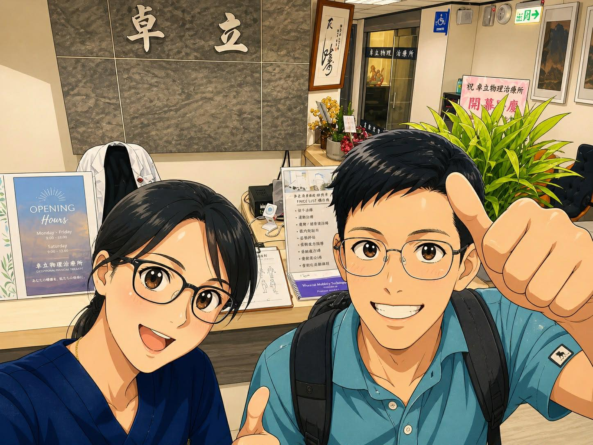
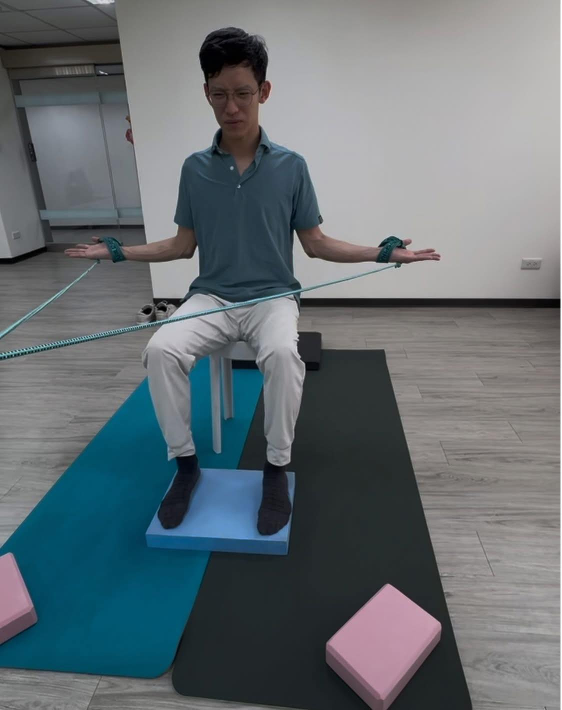

疼痛總是反覆發作？打破疼痛迴圈的兩個關鍵引擎：「治療」與「訓練」
【 疼痛總是反覆發作？打破疼痛迴圈的兩個關鍵引擎：「治療」與「訓練」】
前陣子，診間來了一位長年腰痛的患者。他熱愛跑步，但每次跑完步，腰部必定劇烈痠痛，這個魔咒已經跟著他好多年。
仔細評估後發現，真正的源頭是他從小就有的「脊椎側彎」。對於脊椎側彎的族群來說，所有的肌肉骨骼痠痛，追根究底還是得面對側彎所造成的力學失衡。側彎的角度尚未達到需要開刀的標準，但也不是肉眼視覺可忽略的角度，歪斜的脊椎堆疊與肌筋膜拉扯，時時刻刻都在努力平衡著身體，當然也嘗試過無數的推拿、放鬆與治療，但效果始終有限。
為什麼會這樣？這其實點出了臨床上一個最常見，卻也最容易被忽略的盲點：對於恢復健康，常常只努力了一半。就像許多醫師們常叮嚀的：吃了藥、做了治療，如果不主動改變飲食、作息有害的生活習慣，那問題就會一直反覆出現。
在我的醫療價值觀裡，一個真正能終結反覆疼痛的完善模式，必須是『治療 (Treatment) ＋ 訓練 (Training) 』的完美接力。
第一階段，治療端：拆除炸彈，解除受限
治療的目的，是針對身體的疼痛、結構的受損、筋膜的沾黏進行介入。透過藥物、針刺、注射或徒手治療、震波能量等技術，把緊繃死鎖的結構「解開」，試圖控制發炎、修復結構破損、恢復關節與肌肉應有的活動空間。
第二階段，訓練端：重塑迴路，優化效能
這是最多人忽略，卻也是很重要的一環。
當身體被「解開」後，如果你還是用原本錯誤的姿勢、無力的核心去生活與運動，那身體很快又會歪回去。訓練，就是在治療後對身體的「投資」。透過有目的性、針對性的動作訓練，讓大腦與神經的控制越來越精確，提升身體使用的效率，減少不必要的代償消耗。
臨床經驗一再重複見到：光靠「治療」，只要沒有刻意透過「訓練」來修正錯誤的身體使用習慣，疼痛多半會反反覆覆。
回到這位脊椎側彎的患者。先透過乾針與徒手技術，解除了他肌筋膜的內傷與沾黏。在結構解鎖後，他的腰痛頻率大幅下降，甚至可以連續跑上一週而不引發不適。
但為了真正打破復發的迴圈，我跟他一起做了一個決定：轉介給 卓立物理治療所（台北院區）的 劉柏孜 劉小柏院長。請學姐運用她專精的「SPS脊椎矯正訓練」，接手後續的主動重建工程，進一步改善他的側彎與神經控制。
今天趁著空檔，我親自去拜訪了學姐，她也熱情地帶我體驗了這套訓練的「起手式」。
真的不誇張，光是這招就讓我練到氣喘吁吁！但成效極度震撼：我原本右腳有扁平足塌陷的問題，單腳站立撐不到 8 秒就會失去平衡；但在練完三趟之後，神經控制瞬間被喚醒，我竟然能直接達到標準，單腳穩穩撐住 15 秒以上，右腳足弓的抓地力也變得非常穩定踏實！
【 醫師的結語 】
這段跨領域的合作與親身體驗，再次深深驗證了我的信念：治療與訓練，兩端都不能少。
「治療」，就像把歪斜的車輪重新定位、換上全新的避震器（修復硬體），但如果沒有透過「訓練」去改變糟糕的駕駛習慣，繼續天天開車去撞坑洞，零件很快又會耗損報銷；反之，單方面的一直「訓練」，就像要求一台底盤卡死、生鏽的車子硬踩油門，只會造成身體更大的撕裂與代償。
從解除筋膜枷鎖的「被動治療」，到重塑神經迴路與動作控制的「主動訓練」，這兩者的結合，才是真正能帶領患者走出疼痛迷宮、減少反覆發作的適切解方。
特別感謝卓立物理治療所的劉院長，願意攜手合作，透過各自的專業嫁接，共同為患者拼湊出最完善的健康拼圖！
#脊椎側彎 #長年腰痛 #肌筋膜乾針 #徒手治療 #治療與訓練 #跨領域合作
#表情逐漸毋湯 #實在扛不住
太初中醫診所 東門中醫
中醫師 黃彥鈞

